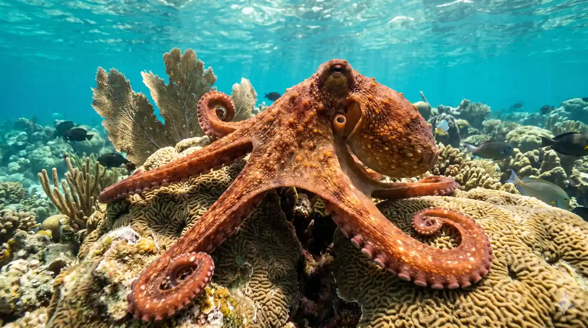
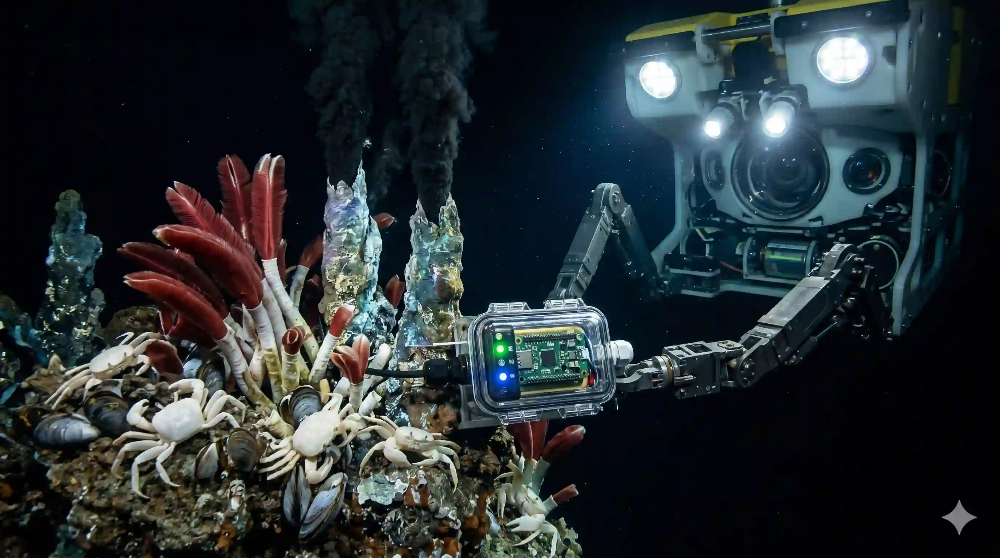
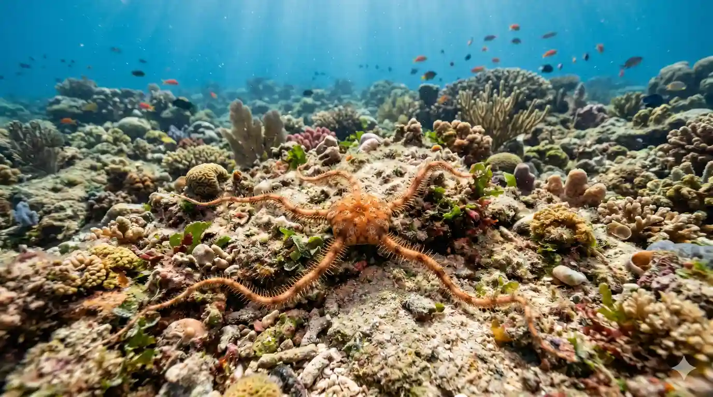

Our oceans shelter over 230,000 documented species. Dive deep to learn about their biology, their ecosystem value, and the campaigns underway to secure their future.
Whales, dolphins, seals, and otters represent the ocean's warm-blooded residents. These creatures hold high ecological importance, behaving as sentinel species that signal overall health of the food web.
Because they sit near the top of marine cascades, tracking their migration patterns, bioaccumulation rates, and population densities allows researchers to isolate oceanic stressors. Our teams actively monitor migration corridors, establishing temporary vessel speed limits to avoid collisions.


Reefs are the rainforests of the sea. Occupying less than 0.1% of the ocean floor, they support more than 25% of all marine species, acting as shoreline protectors and nurseries.
Rising sea temperatures induce widespread coral bleaching, starving reef ecosystems of their primary energy source. Our scientists select heat-resistant coral fragments, nurture them in offshore tables, and restore damaged limestone skeletons to secure these vital coastal buffer structures.
From the vaquita porpoise to the hawksbill sea turtle, hundreds of unique marine creatures hover on the brink of extinction. Overfishing, selective harvesting, and floating plastics drive this steep decline.
We focus rescue resources on key priority corridors. By introducing turtle excluder devices (TEDs) to trawling networks and training artisanal fisherman on selective netting practices, we build real-world defenses for endangered populations.

Click on any species below to view its specific threat report, habitat needs, and our conservation status.
How we actively defend vulnerable species in the field.
Partnering with national coast guards to monitor protected areas and deter illegal trawlers.
Tagging whales and turtles to map migration corridors, helping to optimize global shipping lanes.
Deploying sea telemetry buoys that feed real-time temperature updates to predict bleaching waves.